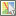
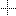
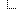

Other usage: see below.%ICON{help}%results in:Note that
ICON{}assumes an image of 16 x 16 pixels. See the tables below for copy-paste examples.
| Name | Icon | Description | Write... |
|---|---|---|---|
| airplane | airplane | %ICON{airplane}% |
|
| alert | |
alert | %ICON{alert}% |
| award | |
award | %ICON{award}% |
| barcode | barcode | %ICON{barcode}% |
|
| bed | bed | %ICON{bed}% |
|
| bomb | |
bomb | %ICON{bomb}% |
| book | |
Book | %ICON{book}% |
| blank | Blank box | %ICON{blank}% |
|
| blank-bg | Blank box, transparent | %ICON{blank-bg}% |
|
| bubble | |
Speech bubble | %ICON{bubble}% |
| bug | |
bug | %ICON{bug}% |
| chart-bar | |
chart-bar | %ICON{chart-bar}% |
| chart-pie | |
chart-pie | %ICON{chart-pie}% |
| cog | cog | %ICON{cog}% |
|
| comments | |
comments | %ICON{comments}% |
| connections | |
connections | %ICON{connections}% |
| database | |
database | %ICON{database}% |
| days | |
Days, Calendar | %ICON{days}% |
| detail | |
detail | %ICON{detail}% |
| download | |
Download | %ICON{download}% |
| fax | |
Fax | %ICON{fax}% |
| filter | Filter | %ICON{filter}% |
|
| food | food | %ICON{food}% |
|
| gear | |
Gear | %ICON{gear}% |
| globe | |
Globe | %ICON{globe}% |
| graduation | graduation | %ICON{graduation}% |
|
| hand | |
Pointing hand | %ICON{hand}% |
| heart | |
heart | %ICON{heart}% |
| help | |
Help | %H%, %ICON{help}% |
| hourglass | |
Hour glass (clock) | %ICON{hourglass}% |
| info | |
Info | %ICON{info}% |
| legal | legal | %ICON{legal}% |
|
| luggage | luggage | %ICON{luggage}% |
|
| map |  | Map | %ICON{map}% |
| mechanics | mechanics | %ICON{mechanics}% |
|
| megaphone | |
Megaphone | %ICON{megaphone}% |
| mobile | |
Mobile | %ICON{mobile}% |
| more | |
Read more | %ICON{more}% |
| more-small | |
Read more, 13x13 | %ICON{more-small}% |
| move | |
Move | %ICON{move}% |
| note | |
Note | %ICON{note}% |
| parked | |
Parked | %ICON{parked}% |
| parts | |
Parts | %ICON{parts}% |
| pencil | |
Pencil / Refactor / Edit | %P%, %ICON{pencil}% |
| phone | Phone | %ICON{phone}% |
|
| photo | |
Photo, 13x10 | %ICON{photo}% |
| presentation | |
Presentation | %ICON{presentation}% |
| plug | plug | %ICON{plug}% |
|
| puzzle | |
Puzzle | %ICON{puzzle}% |
| process | process | %ICON{process}% |
|
| profile | |
profile | %ICON{profile}% |
| question | |
Question | %ICON{question}% |
| quiet | |
Quiet | %ICON{quiet}% |
| radioactive | radioactive | %ICON{radioactive}% |
|
| rfc | Request for comments | %ICON{rfc}% |
|
| sitemap | |
Site map | %ICON{sitemap}% |
| socket | socket | %ICON{socket}% |
|
| sitetree | |
Site tree | %ICON{sitetree}% |
| sort | |
Sort | %ICON{sort}% |
| stargold | |
Gold star, favorites | %ICON{stargold}% |
| starred | Red star, highlight | %S%, %ICON{starred}% |
|
| star-full | |
star-full | %ICON{star-full}% |
| star-half | star-half | %ICON{star-half}% |
|
| star-none | |
star-none | %ICON{star-none}% |
| stop | |
Stop | %ICON{stop}% |
| support | support | %ICON{support}% |
|
| switch | |
switch | %ICON{switch}% |
| target | Target | %ICON{target}% |
|
| target-blue | Target - blue | %ICON{target-blue}% |
|
| target-gray | |
Target - gray | %ICON{target-gray}% |
| target-green | Target - green | %ICON{target-green}% |
|
| target-orange | Target - orange | %ICON{target-orange}% |
|
| target-red | Target - red | %ICON{target-red}% |
|
| thumbs-down | |
thumbs-down | %ICON{thumbs-down}% |
| thumbs-up | |
thumbs-up | %ICON{thumbs-up}% |
| tip | |
Tip, idea | %T%, %ICON{tip}% |
| toolbox | |
toolbox | %ICON{toolbox}% |
| tooth | tooth | %ICON{tooth}% |
|
| traffic-light | traffic-light | %ICON{traffic-light}% |
|
| vcard | vcard | %ICON{vcard}% |
|
| video | |
Video, 13x10 | %ICON{video}% |
| warning | |
Warning, important | %X%, %ICON{warning}% |
| watch | |
Watch | %ICON{watch}% |
| wip | |
Work in progress, under construction | %ICON{wip}% |
| wrench | |
Wrench, tools | %ICON{wrench}% |
| ying-yang | |
ying-yang | %ICON{ying-yang}% |
| Name | Icon | Description | Write... |
|---|---|---|---|
| viewtopic | |
View topic | %ICON{viewtopic}% |
| printtopic | |
Print topic | %ICON{printtopic}% |
| refreshtopic | |
Refresh topic | %ICON{refreshtopic}% |
| newtopic | |
New topic | %ICON{newtopic}% |
| edittopic | |
Edit topic | %ICON{edittopic}% |
| save | |
Save | %ICON{save}% |
| attachfile | |
Attach file | %ICON{attachfile}% |
| download | |
Download | %ICON{download}% |
| trash | |
Trash | %ICON{trash}% |
| trash-small | Trash small, 11x11 | %ICON{trash-small}% |
|
| searchtopic | |
Search topic | %ICON{searchtopic}% |
| search-small | |
Small search button, 13x13 | %ICON{search-small}% |
| topicbacklinks | |
Topic back-links | %ICON{topicbacklinks}% |
| topicdiffs | |
Topic difference | %ICON{topicdiffs}% |
| statistics | |
Statistics | %ICON{statistics}% |
| index | |
Index | %ICON{index}% |
| indexlist | |
Index list | %ICON{indexlist}% |
| cachetopic | |
Cache topic | %ICON{cachetopic}% |
| folder | |
Folder | %ICON{folder}% |
| table | |
Table | %ICON{table}% |
| edittable | |
Edit table | %ICON{edittable}% |
| uweb-bo | UWEB (Universal Wiki Edit Button), blue, outline | %ICON{uweb-bo}% |
|
| uweb-bo12 | |
UWEB, blue, outline, small 12x12 | %ICON{uweb-bo12}% |
| uweb-g | |
UWEB, green (default) | %ICON{uweb-g}% |
| uweb-gs | |
UWEB, green, square | %ICON{uweb-gs}% |
| uweb-m12 | |
UWEB, black, small 12x12 | %ICON{uweb-m12}% |
| uweb-o | UWEB, orange | %ICON{uweb-o}% |
|
| uweb-o12 | |
UWEB, orange, small 12x12 | %ICON{uweb-o12}% |
| uweb-oo | |
UWEB, orange, outline | %ICON{uweb-oo}% |
| uweb-os | UWEB, orange, square | %ICON{uweb-os}% |
| Name | Icon | Description | Write... |
|---|---|---|---|
| person | |
Person | %ICON{person}% |
| persons | |
Persons | %ICON{persons}% |
| group | |
Group | %ICON{group}% |
| useractive | |
Active user | %ICON{useractive}% |
| userinactive | |
Inactive user | %ICON{userinactive}% |
| useradd | |
Add user | %ICON{useradd}% |
| userdelete | Delete user | %ICON{userdelete}% |
|
| useredit | |
Edit user | %ICON{useredit}% |
| building | Building | %ICON{building}% |
|
| buildings | |
Buildings | %ICON{buildings}% |
| logout | |
Log out | %ICON{logout}% |
| key | |
Key | %ICON{key}% |
| lock | |
Lock | %ICON{lock}% |
| locktopic | |
Locked topic | %ICON{locktopic}% |
| locktopicgray | |
Locked topic, gray | %ICON{locktopicgray}% |
| lockfolder | Locked folder | %ICON{lockfolder}% |
|
| lockfoldergray | |
Locked folder, gray | %ICON{lockfoldergray}% |
| Name | Icon | Description | Write... |
|---|---|---|---|
| changes | |
Changes | %ICON{changes}% |
| changes-small | |
Changes (small), 13x13 | %ICON{changes-small}% |
| recentchanges | |
Recent changes | %ICON{recentchanges}% |
| |
%ICON{mail}% |
||
| notify | |
Notify | %ICON{notify}% |
| feed | |
Feed | %ICON{feed}% |
| rss | |
rss | %ICON{rss}% |
| rss-feed | RSS feed, 36x14 | %ICON{rss-feed}% |
|
| rss-small | |
RSS feed | %ICON{rss-small}% |
| xml-feed | |
XML feed, 36x14 | %ICON{xml-feed}% |
| xml-small | |
XML feed | %ICON{xml-small}% |
| Name | Icon | Description | Write... |
|---|---|---|---|
| new | |
NEW, 30x16 | %N%, <img src="%ICONURL{new}% |
| todo | TODO, 37x16 | %ICON{todo}% |
|
| updated | |
UPDATED, 55x16 | %U%, <img src="%ICONURL{updated}% |
| done | DONE, 37x16 | %ICON{done}% |
|
| closed | CLOSED, 48x16 | %ICON{closed}% |
|
| processing-32-bg | |
processing-32-bg | %ICON{processing-32-bg}% |
| processing-32 | processing-32 | %ICON{processing-32}% |
|
| processing-bg | processing-bg | %ICON{processing-bg}% |
|
| processing | processing | %ICON{processing}% |
|
| add | |
add | %ICON{add}% |
| remove | |
remove | %ICON{remove}% |
| minus | |
Minus | %ICON{minus}% |
| plus | |
Plus | %ICON{plus}% |
| choice-cancel | |
Cancel | %ICON{choice-cancel}% |
| choice-no | No | %ICON{choice-no}% |
|
| choice-yes | |
Yes / Done | %Y%, %ICON{choice-yes}% |
| unchecked | Unchecked checkbox | %ICON{unchecked}% |
|
| checked | Checked checkbox | %ICON{checked}% |
|
| checked-round | checked-round | %ICON{checked-round}% |
|
| unchecked-round | unchecked-round | %ICON{unchecked-round}% |
|
| flag | |
Flag | %ICON{flag}% |
| flag-gray | |
Gray flag | %ICON{flag-gray}% |
| flag-gray-small | |
Small gray flag, 13x13 | %ICON{flag-gray-small}% |
| led-aqua | Aqua led | %ICON{led-aqua}% |
|
| led-blue | |
Blue led | %ICON{led-blue}% |
| led-gray | |
Gray led | %ICON{led-gray}% |
| led-green | |
Green led | %ICON{led-green}% |
| led-orange | |
Orange led | %ICON{led-orange}% |
| led-purple | |
Purple led | %ICON{led-purple}% |
| led-red | |
Red led | %ICON{led-red}% |
| led-yellow | |
Yellow led | %ICON{led-yellow}% |
| led-box-aqua | |
Aqua led | %ICON{led-box-aqua}% |
| led-box-blue | Blue led | %ICON{led-box-blue}% |
|
| led-box-gray | Gray led | %ICON{led-box-gray}% |
|
| led-box-green | Green led | %ICON{led-box-green}% |
|
| led-box-orange | Orange led | %ICON{led-box-orange}% |
|
| led-box-purple | Purple led | %ICON{led-box-purple}% |
|
| led-box-red | |
Red led | %ICON{led-box-red}% |
| led-box-yellow | Yellow led | %ICON{led-box-yellow}% |
|
| tag | |
Tag | %ICON{tag}% |
| tag-black | tag-black | %ICON{tag-black}% |
|
| tag-blue | |
Blue tag | %ICON{tag-blue}% |
| tag-brown | |
Brown tag | %ICON{tag-brown}% |
| tag-green | |
Green tag | %ICON{tag-green}% |
| tag-magenta | Magenta tag | %ICON{tag-magenta}% |
|
| tag-orange | |
Orange tag | %ICON{tag-orange}% |
| tag-purple | |
Purple tag | %ICON{tag-purple}% |
| tag-red | Red tag | %ICON{tag-red}% |
|
| tag-yellow | |
Yellow tag | %ICON{tag-yellow}% |
| Name | Icon | Description | Write... |
|---|---|---|---|
| home | |
Home | %ICON{home}% |
| sitemap | |
Site map | %ICON{sitemap}% |
| sitetree | |
Site tree | %ICON{sitetree}% |
| topicbacklinks | |
Topic back-links | %ICON{topicbacklinks}% |
| arrowdot | |
Meet here (arrows to red dot) | %ICON{arrowdot}% |
| external | |
External site | %ICON{external}% |
| left | |
Left | %ICON{left}% |
| right | |
Right | %ICON{right}% |
| up | |
Up | %ICON{up}% |
| down | |
Down | %ICON{down}% |
| arrowbleft | |
Arrow blue left | %ICON{arrowbleft}% |
| arrowbright | |
Arrow blue right | %ICON{arrowbright}% |
| arrowright-small | arrowright-small | %ICON{arrowright-small}% |
|
| arrowbup | |
Arrow blue up | %ICON{arrowbup}% |
| arrowbdown | |
Arrow blue down | %ICON{arrowbdown}% |
| arrowleft | |
Arrow left | %ICON{arrowleft}% |
| arrowright | |
Arrow right | %M%, %ICON{arrowright}% |
| arrowup | |
Arrow up | %ICON{arrowup}% |
| arrowdown | |
Arrow down | %ICON{arrowdown}% |
| go_start | Go to start | %ICON{go_start}% |
|
| go_fb | |
Go fast back | %ICON{go_fb}% |
| go_back | Go back | %ICON{go_back}% |
|
| go_forward | |
Go forward | %ICON{go_forward}% |
| go_ff | Go fast forward | %ICON{go_ff}% |
|
| go_end | |
Go to end | %ICON{go_end}% |
| Name | Icon | Description | Write... |
|---|---|---|---|
| monospace | m |
Monospace | %ICON{monospace}% |
| proportional | p |
Proportional | %ICON{proportional}% |
| tablesortdiamond | |
Sort table | %ICON{tablesortdiamond}% |
| tablesortdown | Sort table descending | %ICON{tablesortdown}% |
|
| tablesortup | |
Sort table ascending | %ICON{tablesortup}% |
| toggleopen | |
Open toggle, Twisty open toggle | %ICON{toggleopen}% |
| toggleclose | |
Close toggle, Twisty close toggle | %ICON{toggleclose}% |
| toggleopen-small | |
Open toggle, Twisty open toggle | %ICON{toggleopen-small}% |
| toggleclose-small | |
Close toggle, Twisty close toggle | %ICON{toggleclose-small}% |
| toggleopen-mini | |
Open toggle, Twisty open toggle | %ICON{toggleopen-mini}% |
| toggleclose-mini | Close toggle, Twisty close toggle | %ICON{toggleclose-mini}% |
|
| toggleopenleft | |
Open toggle, Twisty open toggle | %ICON{toggleopenleft}% |
| toggleopenleft-small | |
Open toggle, Twisty open toggle | %ICON{toggleopenleft-small}% |
| togglecloseleft-small | togglecloseleft-small | %ICON{togglecloseleft-small}% |
|
| web-bg | |
Web background, used in WebLeftBarWebsList | %ICON{web-bg}% |
| web-bg-small | |
Web background, 13x13 | %ICON{web-bg-small}% |
| Name | Icon | Description | Write... |
|---|---|---|---|
| addon | |
Add-on | %ICON{addon}% |
| application | |
Application | %ICON{application}% |
| code | |
Code | %ICON{code}% |
| foswiki | |
Foswiki | %ICON{foswiki}% |
| package | |
Package | %ICON{package}% |
| plugin | |
Plugin | %ICON{plugin}% |
| tag | |
Tag | %ICON{tag}% |
| searchpackage | Search package | %ICON{searchpackage}% |
|
| searchtag | Search tag | %ICON{searchtag}% |
|
| skin | Skin | %ICON{skin}% |
|
| irc | |
irc | %ICON{irc}% |
| Name | Icon | Description | Write... |
|---|---|---|---|
| amazon | amazon | %ICON{amazon}% |
|
| aol | aol | %ICON{aol}% |
|
| app-store | app-store | %ICON{app-store}% |
|
| apple | |
apple | %ICON{apple}% |
| bebo | bebo | %ICON{bebo}% |
|
| behance | behance | %ICON{behance}% |
|
| bing | bing | %ICON{bing}% |
|
| bitly | bitly | %ICON{bitly}% |
|
| blogger | |
blogger | %ICON{blogger}% |
| button-blue | button-blue | %ICON{button-blue}% |
|
| button-green | button-green | %ICON{button-green}% |
|
| button-light-blue | button-light-blue | %ICON{button-light-blue}% |
|
| button-orange | button-orange | %ICON{button-orange}% |
|
| button-red | button-red | %ICON{button-red}% |
|
| button-white | button-white | %ICON{button-white}% |
|
| button-yellow | button-yellow | %ICON{button-yellow}% |
|
| delicious | delicious | %ICON{delicious}% |
|
| design-bump | design-bump | %ICON{design-bump}% |
|
| designfloat | designfloat | %ICON{designfloat}% |
|
| deviant-art | deviant-art | %ICON{deviant-art}% |
|
| digg | digg | %ICON{digg}% |
|
| drupal | drupal | %ICON{drupal}% |
|
| ebay | ebay | %ICON{ebay}% |
|
| |
%ICON{email}% |
||
| |
%ICON{facebook}% |
||
| feedburner | feedburner | %ICON{feedburner}% |
|
| flickr | |
flickr | %ICON{flickr}% |
| friendfeed | friendfeed | %ICON{friendfeed}% |
|
| friendster | friendster | %ICON{friendster}% |
|
| github | github | %ICON{github}% |
|
%ICON{google}% |
|||
| google-buzz | google-buzz | %ICON{google-buzz}% |
|
| google-talk | google-talk | %ICON{google-talk}% |
|
| gowalla | gowalla | %ICON{gowalla}% |
|
| icq | icq | %ICON{icq}% |
|
| lastfm | lastfm | %ICON{lastfm}% |
|
| |
%ICON{linkedin}% |
||
| meetup | meetup | %ICON{meetup}% |
|
| metacafe | metacafe | %ICON{metacafe}% |
|
| microsoft | microsoft | %ICON{microsoft}% |
|
| mister-wong | mister-wong | %ICON{mister-wong}% |
|
| mixx | mixx | %ICON{mixx}% |
|
| mobileme | mobileme | %ICON{mobileme}% |
|
| msn | msn | %ICON{msn}% |
|
| myspace | myspace | %ICON{myspace}% |
|
| netvibes | netvibes | %ICON{netvibes}% |
|
| newsvine | newsvine | %ICON{newsvine}% |
|
| paypal | paypal | %ICON{paypal}% |
|
| picasa | picasa | %ICON{picasa}% |
|
| podcast | podcast | %ICON{podcast}% |
|
| posterous | posterous | %ICON{posterous}% |
|
| qik | qik | %ICON{qik}% |
|
%ICON{reddit}% |
|||
| retweet | retweet | %ICON{retweet}% |
|
| sharethis | sharethis | %ICON{sharethis}% |
|
| skype | skype | %ICON{skype}% |
|
| slashdot | slashdot | %ICON{slashdot}% |
|
| slideshare | slideshare | %ICON{slideshare}% |
|
| squidoo | squidoo | %ICON{squidoo}% |
|
| star | |
star | %ICON{star}% |
| stumbleupon | stumbleupon | %ICON{stumbleupon}% |
|
| technorati | technorati | %ICON{technorati}% |
|
| tumblr | |
tumblr | %ICON{tumblr}% |
| |
%ICON{twitter}% |
||
| viddler | viddler | %ICON{viddler}% |
|
| vimeo | |
vimeo | %ICON{vimeo}% |
| virb | virb | %ICON{virb}% |
|
| wordpress | wordpress | %ICON{wordpress}% |
|
| wordpress-blue | wordpress-blue | %ICON{wordpress-blue}% |
|
%ICON{xing}% |
|||
| yahoo | yahoo | %ICON{yahoo}% |
|
| yahoo-buzz | yahoo-buzz | %ICON{yahoo-buzz}% |
|
| yelp | |
yelp | %ICON{yelp}% |
| youtube | youtube | %ICON{youtube}% |
| Name | Icon | Description | Write... |
|---|---|---|---|
| line_ld | |
Line graph left-down | %ICON{line_ld}% |
| line_lr | |
Line graph left-right | %ICON{line_lr}% |
| line_lrd | |
Line graph left-right-down | %ICON{line_lrd}% |
| line_rd | Line graph right-down | %ICON{line_rd}% |
|
| line_ud | |
Line graph up-down | %ICON{line_ud}% |
| line_udl | Line graph up-down-left | %ICON{line_udl}% |
|
| line_udlr | Line graph up-down-left-right | %ICON{line_udlr}% |
|
| line_udr | |
Line graph up-down-right | %ICON{line_udr}% |
| line_ul | |
Line graph up-left | %ICON{line_ul}% |
| line_ulr | Line graph up-left-right | %ICON{line_ulr}% |
|
| line_ur | |
Line graph up-right | %ICON{line_ur}% |
| line_ur_gray | |
Line graph up-right, gray | %ICON{line_ur_gray}% |
| dot_ld | Dot graph left-down | %ICON{dot_ld}% |
|
| dot_lr | |
Dot graph left-right | %ICON{dot_lr}% |
| dot_lrd | |
Dot graph left-right-down | %ICON{dot_lrd}% |
| dot_rd | |
Dot graph right-down | %ICON{dot_rd}% |
| dot_ud | |
Dot graph up-down | %ICON{dot_ud}% |
| dot_udl | |
Dot graph up-down-left | %ICON{dot_udl}% |
| dot_udlr |  | Dot graph up-down-left-right | %ICON{dot_udlr}% |
| dot_udr | |
Dot graph up-down-right | %ICON{dot_udr}% |
| dot_ul | Dot graph up-left | %ICON{dot_ul}% |
|
| dot_ulr | Dot graph up-left-right | %ICON{dot_ulr}% |
|
| dot_ur |  | Dot graph up-right | %ICON{dot_ur}% |
| empty | Empty transparent 16x16 spacer | %ICON{empty}% |
|
| parent_gray | |
Parent arrow | %ICON{parent_gray}% |
%ICON{pdf}% to show the | Name | Icon | Description | Write... |
|---|---|---|---|
| as | |
ActionScript | %ICON{as}% |
| air | |
Adobe Air | %ICON{air}% |
| bat | MS-DOS batch file | %ICON{bat}% |
|
| bmp | |
Bitmap | %ICON{bmp}% |
| c | |
C source code file | %ICON{c}% |
| css | |
Cascading Style Sheet file | %ICON{css}% |
| dll | |
Dynamic Linked Library; Microsoft application file | %ICON{dll}% |
| doc | |
Microsoft Word file | %ICON{doc}% |
| else | |
Unknown file format | %ICON{else}% |
| eml | |
Microsoft Outlook e-mail file | %ICON{eml}% |
| exe | |
Microsoft Executable file | %ICON{exe}% |
| fla | |
Macromedia Flash Movie | %ICON{fla}% |
| fon | |
Windows bitmapped font file | %ICON{fon}% |
| gif | |
GIF | %ICON{gif}% |
| h | |
Header file | %ICON{h}% |
| hlp | |
Standard help file | %ICON{hlp}% |
| html | |
HTML | %ICON{html}% |
| java | |
Java source code file | %ICON{java}% |
| jpg | |
JPEG | %ICON{jpg}% |
| js | |
JavaScript | %ICON{js}% |
| mdb | |
Microsoft Access database File | %ICON{mdb}% |
| mov | Quicktime movie | %ICON{mov}% |
|
| mp3 | |
MP3 | %ICON{mp3}% |
| |
%ICON{pdf}% |
||
| pl | |
Perl source code file | %ICON{pl}% |
| png | |
PNG | %ICON{png}% |
| ppt | |
PowerPoint | %ICON{ppt}% |
| ps | |
Postscript | %ICON{ps}% |
| psd | |
Photoshop document | %ICON{psd}% |
| py | |
Python source code file | %ICON{py}% |
| ram | RealAudio | %ICON{ram}% |
|
| reg | |
Registry file | %ICON{reg}% |
| sh | |
Unix shell script | %ICON{sh}% |
| sniff | |
sniff | %ICON{sniff}% |
| svg | |
svg | %ICON{svg}% |
| swf | SWF (Shockwave Flash) | %ICON{swf}% |
|
| ttf | |
True Type font | %ICON{ttf}% |
| txt | |
Text | %ICON{txt}% |
| vsd | |
Visio document | %ICON{vsd}% |
| wav | |
Waveform sound file | %ICON{wav}% |
| wri | |
Windows Write | %ICON{wri}% |
| xls | |
Microsoft Excel Spreadsheet | %ICON{xls}% |
| xml | |
XML | %ICON{xml}% |
| xsl | |
XSL (XML style sheet) | %ICON{xsl}% |
| zip | Compressed Zip archive | %ICON{zip}% |
|
| vector | vector | %ICON{vector}% |
In Main.SitePreferences set a macro for an ICON, for example:Full path:* Set H = %ICON{help}%Now you can use the icon by writing%H%For extended use, check outFoswiki:Extensions.SmiliesPlugin that uses a different short hand than%MACROS%.
In any topic, writeTo create an image with a link, write:%PUBURL%/%SYSTEMWEB%/DocumentGraphics/help.pngto showDocumentGraphicswith the topic name.
To get the full URL of the icon, use ICONURL:[[WebHome][%ICON{home}% Home]]to get:Home To get rid of the underline under the space, write:
[[WebHome][%ICON{home}%]] [[WebHome][Home]]to get:
To display the ICON that is automatically assigned to a given filename pass the full filename to the%ICONURL{"toggleopen"}%gets you the image path:http://biostat1478.dhcp.mc.vanderbilt.edu/foswiki/pub/System/DocumentGraphics/toggleopen.png
and that will get rendered as:
%ICON% macro:
Write%ICON{"My wiki documentation.pdf"}%to get
icon:<name_of_icon>. It is only used when the %ICON% macro is called with the icon name. e.g. %ICON{"pencil"}%
%ICON{}% macro is called with a filename or URL.
%ICON% macro using the full filename of the attachment. The ICON macro then maps the file suffix to the icon name
using a mapping table: DocumentGraphics/_filetypes.txt Each line in the table maps a file type extension to an icon name.
In order for the topic attachment table to display an icon, the attachment filetype suffix must be listed in this mapping file.
foswiki/templates/icons.mybook.tmpl on the filesystem, or create a topic called MybookSkinIconsTemplate in the System web
(or if the icon modifications are local to a web, the topic can be created in just that web).
%{ replace the book icon }%
%{ the output of %ICONURL{book}% }%
%TMPL:DEF{"iconurl:book"}%http://someother.corp.server/My-book-company-logo.png%TMPL:END%
%TMPL:DEF{"iconalt:book"}%Book%TMPL:END%
%{ the html output by %ICON{book}% }%
%TMPL:DEF{"icon:book"}%<span class="foswikiIcon"><img src="%TMPL:P{"iconurl:book"}%" width="16" height="16" alt="%TMPL:P{"iconalt:book"}%" /></span>%TMPL:END%
%{ add a new fuzzy-bunny icon }%
%{ the output of %ICONURL{fuzzy}% }%
%TMPL:DEF{"iconurl:fuzzy"}%http://someother.server/fuzzy.png%TMPL:END%
%TMPL:DEF{"iconalt:fuzzy"}%Fuzzy Wuzzy%TMPL:END%
%{ the html output by %ICON{fuzzy}% }%
%TMPL:DEF{"icon:fuzzy"}%<span class="foswikiIcon"><img src="%TMPL:P{"iconurl:fuzzy"}%" width="16" height="16" alt="%TMPL:P{"iconalt:fuzzy"}%" /></span>%TMPL:END%
mybook to your SKIN setting * Set SKIN = mybook, patternThis allows you to create non-image 'ICONS', specify images from other servers, and add Icons in a foswiki Extension. See Skins and SkinTemplates for more information about how to create Skins.
_filetypes.txt file.
.vim filetypes to the vimeo icon: ... vector vector vim vimeo <<< Inserted line <<< vsd vsd ...
_filetypes.txt and attach it to DocumentGraphics
jsp.png
_filetypes.txt, insert a line for the new filetype and icon
jse js jsp jsp <<< Inserted line <<< lzh zip